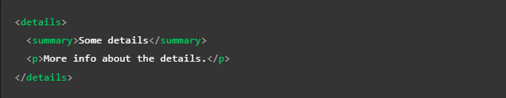

Listado de etiquetas
A
Significa "ancla," es la biñeta utilizada para definir los hipervinculos, el texto que se desee mostrar como enlace debera estar ubicado dentro de esta biñeta.
Esta biñeta no solo redirigue al usuario a otra paguina, si no que tambien puede llevarlo a una sección en espesifico de esta, esto se hace añadienso un "#" seguido del id del elemto que se desee ubicar, (todo esto escrito sin espacios), ya que el "#" hace referencia al id de un elemto. De la misma forma tambien se puede re-dirigir a una sección dentro del mismo documento, esto se hace unacmente escribiendo el "# "seguido del id del elemto seleccionado.
A continuación se muestran dos ejemplos el primero es de una re-dirección a un elemto del mismo documeto, y el segundo a una redirección a un area en particular de un documeto externo.


Atributos
- href: Es el atributo designado para indicar la dirección http a la quu el encase dirigirá al usuario, puede ser una ubicación interna o externa de la pagina
- tittle: Esta etiqueta define el un texto explicativo que hará aparición si el usuario mantiene el raton sobre el enlace, por lo tanto no sera visible para usuarios que navegen usando el teclado o dispositivos tactil
- target: Este atributo define la ventana en la que se abrira el nuevo enlace, si se usa el valor "_blank" se abrira la nueva pagina en una pestaña diferete, en cambio si se omite este atributo el enlace se abrira por defecto en la pestaña activa
Nota: cualquier elemeto puede ir dentro de la biñeta "a", por lo tanto casi cualquier casa puede ser convertida en un en unlace, desde contenedores e imagenes etc.
Nota: Es recomedable que los enlaces brinden palabras claves o algun tipo de información sobre la información a la que re-dirigen ya que tanto los usuarios como los motores de lectura escanean la pguina y uno de los elemtos resaltados en los que se guian son los enlaces
Nota: Otros consejos al crear enlaces son: que el texto que los componga sea breve, los textos exsivamente largos no son gratos, tambien es recomendable evitar que el texto de estos enlaces sea repetitivo, ejemplo de mala practica: "Haz clic aquí"
Nota: Es recomedable usar las direcciones relativas de archivos siempre que sea posible, ya que pese a que deja de funcionar si el archivo en el que se encuentra el llamado cambia de lugar, estas son más efiientes en terminos de procesamiento y más legibles en el cosido, por lo que daran un codigo más legible
Descargar un archivo en un enlace
Para indicar que se trata de la descarga de un elemento se utiliza el atributo "download", el cual no solo indicara que el navegador debe descargar el elemento seleccionado si no que tambien define el nombre que se vinculara al archivo al hacerlo (esto lo hace en base al texto que se indique en el atributo)
Enviar un correo mediante un enlace
Esta es otra función que ofrece la etiqueta "a", para aser uso de esta se utiliza el valor "mailto", en el atributo "href" seguido del correo electronico al que se desee que el usuario contacte, esto abrira una ventana de correo electronico con el correo en cuestion selecionado como destinatario, a su vez otra opción es poner el atributo "href" unicamnte con valor de "mailto" esto abrira la venta de correo pero no proveera un destinatario en espesifico
El siguiente es un correo de como se usa el atributo "mailto":

Abbr
Se trata de una etiqueta para definir las abreviaturas, su efecto es que la abreviatura o el acronimo se mostrara con un subrayado puntuado, y al posicionar el raton sobre este se mostrara un texto emergente con la expresión completa del termino
Para definir la expresión completa se utiliza el atributo "title", seguido de la expresión
Ejemplo de visualización
HTML
Adress
Aporta la información de contacto de un article cercano o del elemento padre com el body.
Dentro de este no deben haber etiquetas contenedores, unicamnete debe tener la información de contacto, ya que es una etiqueta simatica.
Nota: Se puede incorporar hipervinculos dentro de este
B
Su función unicamnte es la de mostrar el texro que se encuentre dentro de este en negritas, no añade ningun valor semantico a este
Br
Esta la función de esta etiqueta es muy simple, indica un salto de linea, sin importar realmente en que lugar o contenedor se encuentre siempre tendra el mismo efecto el cual es equivalente a presionar Enter en un editor de texto
Si se utiliza en el interior de una etiqueta "p" (parrafo) esta biñeta aplicara el mismo efecto que tendria un "punto y aparte", por lo tanto el texto saltara a la siguiete linea pero no se distanciara de la linea anterior ni tomara sangria, por lo tato se puede usar para representar lineas cortas como las de un verso.
Details
Actua com un widget de revelación, ya que tiene la funcionalidad de mostrar un texto oculto que se repliega cuando se clickea sobre este, es necesario tener presente que se trata de una etiqueta baste reciente por lo tanto no esta abilitada en verciones antiguas de los navegadores, a su vez puede ser ubicada en cualquier elemento que acepte contenido dinamico
Atributos
- Details incluye los atributos globales
- open: Este atributo Booleano indica si los detalles serán mostrados al usuario cuando la página se cargue, por defecto el valor es false y por lo tanto los detalles estarán ocultos.
Ejemplo
Efecto
Some details
More info about the details.
Em
Se usa para dar un poco de énfasis o relevancia a algun texto, el texto dentro de esta biñeta se muestra en cursiva
Figcaption
Consiste en un elemto para indicar que un texto esta binculado con una imagen(pie de imagen), ya que es un elemto de texto no es necesario usar el elemto "p" dentro de este, se trata de un elemto con valor semantico
La forma de emplearlo es que junto al elemto de imagen ("img") este contenido en un "figure"
Hr
Esta es otra etiqueta con una función simple, de aplicarse crea una linea horizontal en el contenedor en que se encuentre, se utiliza para crear devicones visuales
Ejemplo de visualización
Primer elemto
Segundo elemto
I
Consiste en una etiqueta para mostrar el texto en cursiva o italica, no brinda ningun valor semantico
Superíndice y Subíndice
En ocaciones puede ser necesario incorporar estos elemtos en algun texto, para ello existen estas dos etiquetas:
sup: Esta etiqueta se usa para el definir el superíndice, lo hace encacillando a esté en su interior
- sub: Esta etiqueta se usa para definir el subíndice, lo hace encacillando a este en su nterior
Un ejemplo de ambos casos es el siguiente
Strong
Se usa para darle gran importancia al texto dentro de esta biñeta, se muestra como texto en negritas
Time
Existen muchas formas de plasmar una fecha, sin mencionar que esto puede representarse de forma deferente en algunos lugares, para eso se utiliza el elemto "time", acompañado del atributo "datetime", ya que este elemto tiene la ventaja de que funciona para cualquier formato de fecha (hora, dia, mes, año) así como para las mesclas de estos.
Su uso consiste en ingresar la fecha dentro del atributo "datetime" con el formato adecuado para que sea entendible por el navegador, a su vez dentro de la etiqueta se ingresa la fecha de la forma que sera visible para los usarios, de esa forma el usuario puede visualizar cualquiera que sea el formato de fecha con el que este familiarizado, sin que el navegador presente algun error
Elemplos de aplicación

U
Su función unicamnte es la de mostrar el texro que se encuentre dentro de este subrayado, no añade ningun valor semantico a este